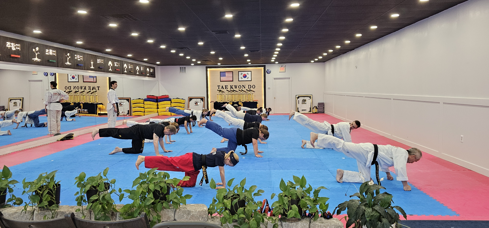
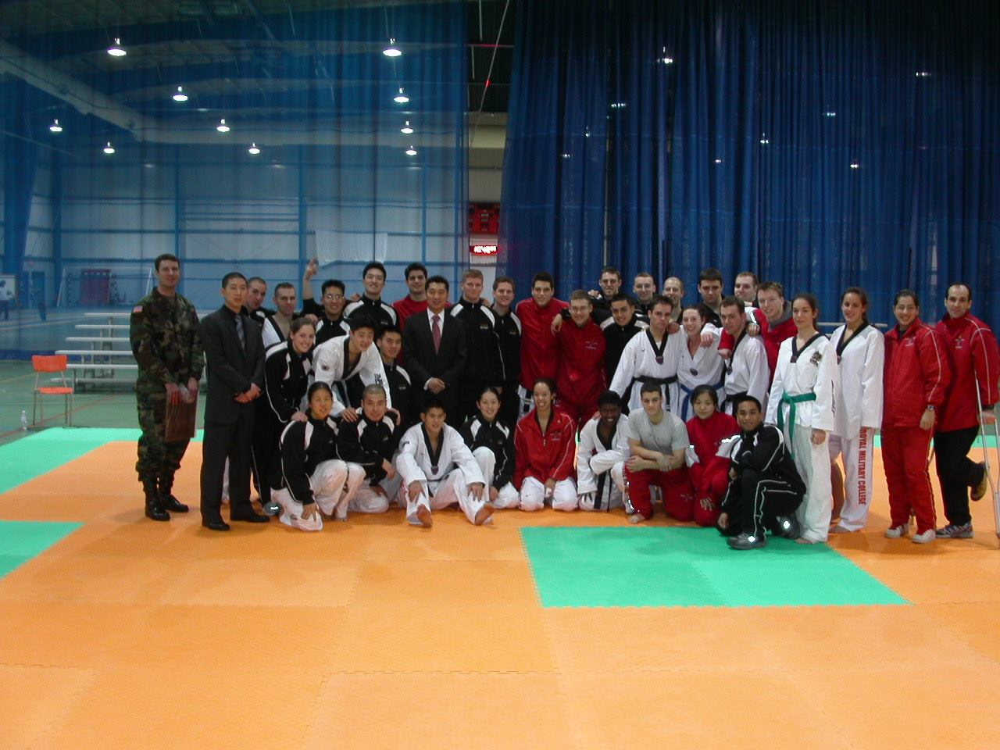
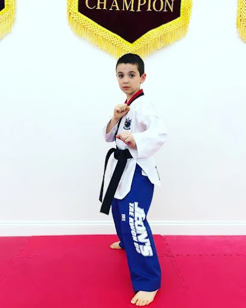
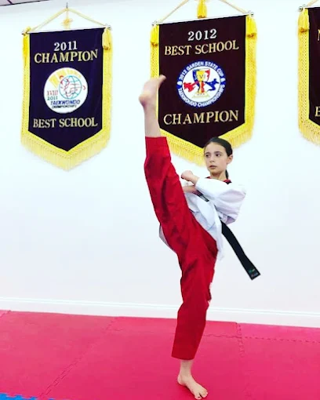

Free Trial + 6-Week Trial Program
Start with a complimentary trial class, then join our 6-week program with a free uniform and unlimited classes.
Train directly with 7th-Degree Black Belt Grand Master Jeon in Chester, NJ. Start with a free trial class and explore our 6-week trial program with a free uniform and unlimited classes.
Sign Up For a Free Trial Class Call 908-879-7721Trial offers, private lessons, and upcoming dojang events.
Start with a complimentary trial class, then join our 6-week program with a free uniform and unlimited classes.
Personalized 30- or 50-minute sessions with Grand Master Jeon for all ages and levels.
Confirm stripe requirements with Grand Master Jeon during class and prepare for the next rank.

Group classes are organized by age and experience; private lessons are available for every level.
Ages 4–6. Build balance, coordination, listening habits, focus, and respect.
Ages 7+. Develop confidence, agility, goal-setting, and Taekwondo skills.
Fitness, flexibility, stress relief, and practical self-defense for beginner to black belt.
Customized 30- or 50-minute sessions for all ages and levels.
Groups are separated by age and experience, from first-time beginners to advanced black belts. Contact us for the current schedule and private lesson availability.
Ask About ScheduleUniforms, apparel, and training equipment are available at our Chester school.
Official doboks with school patches.
Dojang t-shirts, hoodies, and jackets.
Kicking targets, pads, sparring gear, and bags.
Highlights from Grand Master Jeon's classes, student milestones, and Taekwondo events.



A special highlight celebrating dedication, discipline, and achievement in Taekwondo.
.webp)


.jpg)
.jpg)

.jpg)
.jpg)




Dojang Training & Class Action at A Plus Grand Master Jeon Taekwondo
Families in Chester and Morris County value our focus on confidence, discipline, and respect.
Visit us at 23 W. Main St, Chester, NJ 07930. Call 908-879-7721 or email njchestertkd@gmail.com.
Contact Us